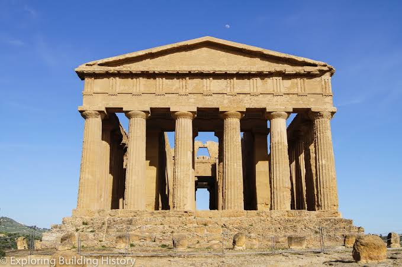
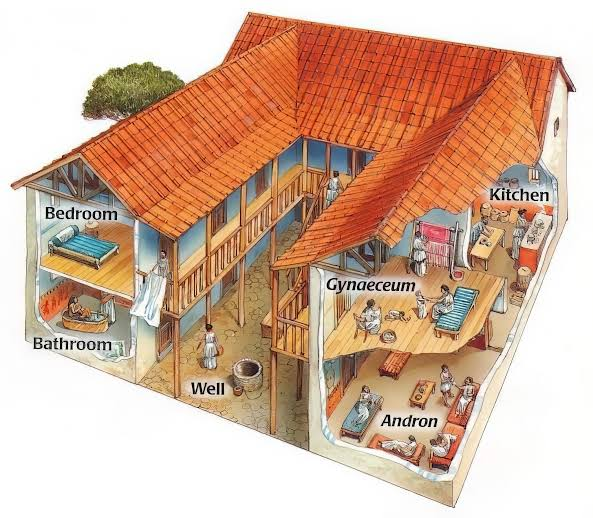

Temples & Architecture
Temples, shrines, palaces & architecture
Temples in Classical Greece
Temples were among the most important buildings in Classical Greece, and they were mainly built to honor the gods and goddesses who were believed to protect Greek cities and influence everyday life. They were usually placed in important locations, such as the top of a hill, within a sacred area called a sanctuary, or in the center of a city. Each temple was dedicated to a particular god or goddess, and it often contained a statue of that deity. For example, the Parthenon in Athens was dedicated to Athena, the goddess of wisdom and the protector of the city. It was built on the Acropolis during the fifth century BCE, when Athens was becoming a powerful cultural and political center. Other famous temples included the Temple of Apollo at Delphi, where people traveled to consult the oracle, and the Temple of Zeus at Olympia, which was connected to the ancient Olympic Games. Temples were not exactly like modern churches, because most religious ceremonies took place outside, in front of the building, where an altar was located. The temples themselves were designed to protect the statue of the god and to demonstrate the city's wealth, religious devotion, and artistic skills. Their decorations often included sculptures showing scenes from Greek mythology, battles between gods and monsters, and stories about legendary heroes.

Architecture in Classical Greece
Classical Greek architecture is famous for its balance, symmetry, proportion, and attention to detail. Greek architects believed that buildings should have harmonious proportions, meaning that the different parts should fit together in a pleasing and organized way. One of the most recognizable features of Greek architecture was the use of columns, which supported the roofs and gave temples their distinctive appearance. The Greeks developed three main architectural orders: Doric, Ionic, and Corinthian. The Doric order was the simplest, with strong columns and plain capitals, and it was commonly used in mainland Greece. The Ionic order was more decorative, with capitals shaped like scrolls, while the Corinthian order had more elaborate capitals decorated with leaves. The Parthenon is one of the best examples of Classical Greek architecture and combines impressive size with carefully planned proportions and sculptural decoration. However, Greek architecture was not limited to temples. The Greeks also built theatres, stadiums, public meeting places, marketplaces called agoras, and large civic buildings. Theatres were often constructed into hillsides so that audiences could watch performances and hear actors more clearly, while agoras served as important centers for trade, politics, and social life. Many Greek buildings were made from limestone or marble, and architects sometimes used small visual adjustments to make structures appear perfectly straight to the human eye. Greek architectural ideas later influenced Roman buildings and continued to inspire architects throughout history. Even today, columns, triangular pediments, and balanced proportions can be seen in museums, universities, courthouses, and government buildings around the world.
TEMPLES

Temples were among the most important buildings in Classical Greece because they were dedicated to the gods and goddesses who were believed to influence people's lives and protect their communities. Religion was closely connected to everyday life, politics, festivals, and the identity of each city-state, so temples often represented the city's devotion, wealth, and power. They were usually built in sacred areas called sanctuaries, on hills, or in other important locations where they could be seen from a distance. Each temple was generally dedicated to a particular deity and contained a statue representing that god or goddess. One of the most famous examples is the Parthenon in Athens, which was dedicated to Athena, the goddess of wisdom and the city's protector. Other important temples included the Temple of Apollo at Delphi, where people travelled to consult the famous oracle, and the Temple of Zeus at Olympia, which was associated with the ancient Olympic Games. Temples were not used in quite the same way as modern churches. Many religious ceremonies took place outdoors, where worshippers gathered around an altar to make sacrifices, offer gifts, and participate in festivals. The temple itself housed the sacred statue and sometimes valuable objects dedicated to the deity. The size and decoration of a temple could also demonstrate how powerful and wealthy a city was, making religious buildings important symbols of civic pride.
Most Greek temples followed a rectangular plan and were surrounded by columns, although their size, layout, and decoration varied. Inside was the cella, also known as the naos, which was the main room where the statue of the deity stood. Many temples also included a front porch called the pronaos and a rear porch known as the opisthodomos. The roof and upper parts were often made using timber and other materials, while the main structure stood on a raised stone platform. Columns and walls were commonly built from limestone or marble, and some temples were decorated with detailed sculptures showing gods, heroes, mythical creatures, and important stories. The triangular pediments at the ends of the roofs were popular places for large sculptural groups, while metopes and friezes could contain scenes of battles or religious events. One of the greatest examples is the Parthenon, constructed on the Athenian Acropolis between 447 and 432 BCE during the leadership of Pericles. It was built mainly from Pentelic marble and combined Doric architecture with some Ionic features. Its sculptures represented stories connected to Athena and the religious traditions of Athens. Building such a monument required enormous resources and the cooperation of many skilled workers. Stone had to be quarried, shaped, transported, and lifted into place, while sculptors and painters worked on the decorative details. Metal clamps were sometimes used to connect stone blocks, helping hold the structure together. The cost of construction could be very high, and wealthy cities sometimes used public funds to finance their temples and other monuments. Temples therefore had both religious and political importance: they honored the gods while also showing the strength, prosperity, and artistic achievements of the communities that built them. Their designs later influenced Roman architecture and remain an important part of the world's architectural heritage.
ARCHITECTURE

The organization and architectural form of the houses differ from one region to another also depending on the chronological phase. Furthermore, they reflect the environmental, economic, population and social changes that take place on mainland Greece in the Early Bronze Age. The architecture of this period must cover the habitation needs of the constantly growing population. In south Greece buildings with stone foundations and mudbrick walls are built mudbricks, whereas in north Greece timber-post framed houses with clay walls which are known from the Neolithic period are constructed. Rectangular, trapezoid and apsidal buildings, usually with one ground floor, are built either freestanding or adjacent to each other. They consist of one large main room with an open or closed antechamber while the existence of a third small room is common. The total area they occupy varies from 30 to 50 square metres. The entrance is on the short and sparsely on the long side of the house and is higher than the floor.
The largest room is the living space of each household since the main functions take place in it, for example food preparation, sleep and productive activities, such as weaving, stone carving, etc. The smallest rooms which are infront or behind the main one, serve in the storage of food or raw materials and in various industrial activities, such as metalworking, bone carving, etc. The interior of the houses includes stable constructions such as kilns and hearths for cooking and stone benches for sleeping, food preparation and storing goods. Goods are stored in pithoi or amphoras, in containers made of wood, hides or reeds, in built-in shelves or suspending ones but also in pits ("bothroi") which are dug into the floor.
The buildings of a particular style, such as the rectangular "Corridor Houses" and the circular buildings ("Rundbau" of Tiryns) are distinguished examples of the EH II architecture. Finally, the widespread use of the apsidal buildings is characteristic of the EH III period.